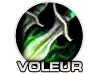
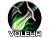

 SPÉCIALISATION PRÉCISION
SPÉCIALISATION PRÉCISION Le Chasseur est une classe à distance. La force de la spécialité Précision réside principalement dans son DPS avec une armes à distance et légèrement avec le dps de son familier, il peut aussi DPS avec ses armes au corps à corps. Il fait donc des dégâts physique et possède un burst puissant en monocible, et léger en multicible.
C'est une classe accessible nécessitant de l’anticipation dans la gestion de son familier et de ses pièges.
En PvP c'est une des spécialisation les plus facile à jouer, car cette classe à un dps constant. C'est une spécialisation qui a un peu de survie et qui dépend de l'armure de l'ennemi.
Elle est très utile en bg, mais aussi viable pour de la 2c2 en arène. elle sera aussi adaptée pour de la 3c3 ou 5c5.
 LES SORTS ET TECHNIQUES LES PLUS UTILISÉS
LES SORTS ET TECHNIQUES LES PLUS UTILISÉS
De dégâts
 Flèches multiples Salve (Peut servir pour décamouflé un rogue / druide)
Flèches multiples Salve (Peut servir pour décamouflé un rogue / druide) Attaque du raptor
Attaque du raptor Piège à serpent
Piège à serpent Piège explosif
Piège explosif Piège d'immolation
Piège d'immolationDe soutiens
 Coupures d'ailes (Pour ralentir au corps à corps)
Coupures d'ailes (Pour ralentir au corps à corps) Morsure de vipère (Pomper la mana d'un caster / healer)
Morsure de vipère (Pomper la mana d'un caster / healer) Piège de givre (Pour ralentir tout autour de vous)
Piège de givre (Pour ralentir tout autour de vous) Piège givrant (Pour bloquer un joueur dans un bloc de glace)
Piège givrant (Pour bloquer un joueur dans un bloc de glace) Pistage des humanoïdes (Trouver un joueur qu'on a perdu de vue)
Pistage des humanoïdes (Trouver un joueur qu'on a perdu de vue) Pistage des camouflés (Utile pour trouver un rogue / druide)
Pistage des camouflés (Utile pour trouver un rogue / druide) Effrayer une bête (Utile contre les druides et chaman en forme de bête)
Effrayer une bête (Utile contre les druides et chaman en forme de bête) Aspect de la nature (Utile contre les sorts de nature, par exemple les chamans et druide)
Aspect de la nature (Utile contre les sorts de nature, par exemple les chamans et druide) Aspect du guépard (Pour courrir plus vite, à ne surtout pas utiliser en combat, sinon vous êtes ralenti si vous prenez un coup)
Aspect du guépard (Pour courrir plus vite, à ne surtout pas utiliser en combat, sinon vous êtes ralenti si vous prenez un coup) Les caps et stats
Les caps et statsRappel : Un cap par définition c'est la valeur à partir de laquelle vous n'avez plus aucun intérêt à monter une statistique.
Expliquées par ordre de priorité :
La puissance d'attaque
C'est une stat importante qui n'a pas de cap. Plus vous en avez, mieux c'est. Mais ça ne veut pas dire qu'il faut up QUE cette stat. montez les autres aussi.
Cette stat s'augmente avec de préfèrence de l'Agilité (car elle augmente aussi le score d'esquive, de coup critique et à faible taux votre armure et celui de votre familier).
La puissance d'attaque augmente aussi celle de votre familier et la puissance de ses sorts.
Le critique
C'est une stat importante à monter, car c'est cette stat qui vous permet, grace à vos critiques, de faire de gros dégâts, c'est toujours un gros plus.
Votre familier ne fera par contre pas plus de coup critique, mais plus vous en avez mieux c'est. Il n'y a pas de cap pour cette stat.
Le toucher
Tout d'abord il faut comprendre que le toucher vous permet d'éviter "les ratés" quand vous frapper vos ennemi que ce soit à distance ou au corps à corps.
En PvP contre une cible de même niveau vous devrez "théoriquement" avoir 5% de toucher, et la Hache s3 à deux mains (Hache sans cote personnel pour chasseur) donne 0,95%, Ce qui n'est pas énorme même si vous avez l'enchantement de tête de l'Expédition cénarienne qui peut augmenter votre toucher, il vous faudra augmenter légèrement votre toucher via votre gemmage (voir plus bas).
le cap est à 5% mais vous pouvez montez au minimum jusqu'à au moins 4%
Si vous estimez toute fois que vous faites beaucoup de "raté", essayez d'augmenter votre toucher légérement. Mais normalement vous n'aurez pas à trop le up, car le stuff du Chasseur à pas mal de toucher donc la seul difficulté va être quand vous serez unstuff.
La résilience
Cette stat est importante en PvP, Elle diminue les dégâts des sources de dégâts périodiques (DOT) et les chances de recevoir un coup critique. Diminue aussi les effets des drains de mana et les dégâts des coups critiques.
Pour faire simple le cap de la résilience est de 492.5, au dessus de 500, la résilience ne diminue plus les chances de recevoir un coup critique (diminué de 25% au max). Mais il n'y a pas de cap résilience pour la diminution des dégâts des DOT.
Plus vous la montez, plus vous aurez de survie.
L'endurance
C'est la Stat de la survivabilité, assez importante en PvP. à monter en second plan à la fois avec le stuff mais aussi avec quelques enchant / gemmes, si vous en avez la possibilité.
Cette stat monte, en plus de vous montez vos points de vie, les points de vie de votre familier.
Vous pouvez mettre deux gemmes critique - endu (gemme rouge / bleue) si vos critiques vous conviennent, pour activer votre méta (voir plus bas).
Pénétration d'armure
Une stat de base utile, qui vous permettra d'ignorer l'armure de votre adversaire. Utile surtout sur les classes à grosse armure, comme le guerrier ou paladin. En PvP c'est la stat que vous monter avec votre stuff. Donc inutile d'en dire plus.
L'expertise
Cette stat ci, comparé au toucher, diminue les chances qu'on esquive ou pare vos attaques de mêlée et à distance. C'est à dire que plus vous avec du score d'expertise, moins l'ennemi va esquiver et / ou parer vos attaques.
C'est surtout une stat PvE, mais contre un rogue qui à beaucoup d'esquive, ça peut être utile. Il y a un bijou à la Terrasse des magistère en héroïque qui à du score d'expertise, inutile donc de s'étendre sur le sujet.
Il n'y a pas de "cap" pour cette stat qui est vraiment optionnelle.
Force
Stat légèrement utile, mais pas rentable pour qu'on la monte. c'est une stat qui donne 50% de son total en Puissance d'attaque.
Le score de hate
C'est ce qui vous accélère la vitesse d'attaque.
Cette stat est inutile en PvP, Sachant que vous avez déjà un talent qui vous accélère la vitesse d'attaque.
C'est une stat utile qu'en PvE.
Le Familier
C'est lui qui vous assiste, et pour la spé Précision, il va vous servir à géner votre adversaire, et légèrement à dps.
En général, Il faut choisir son familier en fonction de ses sorts. Le meilleur pet à prendre pour un chasseur Précision est le scorpide pour son poison cumulable 5 fois, ce qui met en difficulté votre adversaire pour dissiper les poisons, et vous permet de lui pomper sa mana facilement.
Voir la partie sur le familier pour en savoir plus.
Avant de commencer vous pouvez voir les talents chasseur sur ce site
Les points importants dans la spé Précision sont :
 Coups fatals
Coups fatals Piège Coupure d'ailes améliorée
Piège Coupure d'ailes améliorée Pied sûr
Pied sûrAvant de commencer vous pouvez voir les talents chasseur sur ce site
Vous pouvez cliquer sur les images pour les agrandir.
BG
2.gif)
Variante by Tyrosh
Arène

Pour ce qui est des enchants et gemmes il vous faut du critique, de l'Agilité et si possible de l'endurance, voir de la résilience.
La deuxième méta est selon moi la meilleur méta, Car l'augmentation des dégâts critiques peut apporter beaucoup à vos dégâts à distance.
 Méta-gemme Diamant brûleciel de rapidité : +24 à la puissance d'attaque et légère augmentation de la vitesse de course
Méta-gemme Diamant brûleciel de rapidité : +24 à la puissance d'attaque et légère augmentation de la vitesse de course
Il vous faut 2 gemmes jaunes et 1 gemme rouge pour pouvoir l'activer
 +8 critique, ou +10 critique
+8 critique, ou +10 critique +8 Agilité, ou
+8 Agilité, ou  +10 Agilité
+10 Agilité +4 Toucher +4 Agilité, ou
+4 Toucher +4 Agilité, ou  +5 Toucher +5 Agilité : Si vous manquez de toucher
+5 Toucher +5 Agilité : Si vous manquez de toucher Méta-gemme Diamant tonneterre implacable : +12 Agilité et +3% aux dégâts des critiques
Méta-gemme Diamant tonneterre implacable : +12 Agilité et +3% aux dégâts des critiques
Il vous faut 2 gemmes Bleues, 2 gemmes rouges et 2 gemmes jaune pour l'activer
Si vous voulez monter votre Agilité
+8 critique, ou +10 critique +8 Agilité, ou +10 Agilité +4 critique +6 Endurance, ou
+4 critique +6 Endurance, ou  +5 critique +7 Endurance x2 +4 Toucher +4 Agilité, ou +5 Toucher +5 Agilité : Si vous manquez de toucher
+5 critique +7 Endurance x2 +4 Toucher +4 Agilité, ou +5 Toucher +5 Agilité : Si vous manquez de toucherSi vous voulez monter votre critique
+8 critique, ou +10 critique +8 Agilité, ou +10 Agilité +4 Agilité +6 Endurance, ou
+4 Agilité +6 Endurance, ou  +5 Agilité +7 Endurance x2 +4 Toucher +4 Agilité, ou +5 Toucher +5 Agilité : Si vous manquez de toucher
+5 Agilité +7 Endurance x2 +4 Toucher +4 Agilité, ou +5 Toucher +5 Agilité : Si vous manquez de toucher Les enchantements
Les enchantementsPar ordre de priorité
Casque
Arcanum du gladiateur (+18 Endurance et +20 au score de résilience) Réputation Opération Soleil brisé Amical.
Glyphe de férocité (+34 à la puissance d'attaque, +16 au toucher) Réputation Expédition cénarienne Révéré.
Epaules
Calligraphie superieures de supérieure de vengeance (+30 à la puissance d'attaque, +10 score de critique) Exalté Aldor
Calligraphie supérieure de la lame (+20 à la puissance d'attaque, +15 score de critique) Exalté Clairvoyant
Calligraphie de vengeance (+26 à la puissance d'attaque) Honoré Aldor
Calligraphie de la lame (+13 score de critique) Honoré Clairvoyant
Torse
Carac. exceptionnelles (+6 à toutes les caractéristiques)
Pts vie exceptionnels (+150 point de vie)
Résilience majeur (+15 résilience)
Brassards
Assaut (+24 Puissance d'attaque)
Robustesse (+12 Endurance)
ou à la limite Caractéristiques (+4 à toutes les caractéristiques)
Cape
Agilité supérieure (+12 Agilité)
ou à la limite Résistance majeure (+7 à toutes les résistances)
Armure majeure (+120 armure)
Jambes
Craft par un Travailleur du cuir
Armure de jambe de cobra (+50 Puissance d'attaque, +12 critique)
Armure de jambe de faille du Néant (+40 Endurance, +12 Agilité)
Armure de jambe en peau de cobra (+40 Puissance d'attaque, +10 critique)
Armure de jambe en cuir-fourchu (+30 Endurance, +10 Agilité)
Gants
Agilité excellente (+15 Agilité)
Assaut (+26 Puissance d'attaque)
Pieds
Dextérité (+12 Agilité)
Robustesse (+12 Endurance)
Rapidité du félin (+6 Agilité et augmentation de la vitesse de course)
Vitesse du sanglier (+9 Endurance et augmentation de la vitesse de course)
Pied sûr (+10 toucher et Augmente de 5% la résistance à ralentir et à immobiliser)
Tout dépend de votre méta gemme puisque l'augmentation de la vitesse ne se cumule pas.
Bagues
Si vous avez enchantement
Caractéristiques (+4 à toutes les caractéristiques)
Arme à deux mains
Agilité majeur (+35 Agilité)
Sauvegerie (+70 puissance d'attaque)
Arme à distance
Craft par un ingénieur
Lunette en éternium stabilisé (+28 score de critique)
Hyperviseur Biznicks 247 x 128 (+30 de toucher)
Lunette en khorium (+12 dégâts de l'arme)
Lunette en adamantite (+10 dégâts de l'arme)
Légende :
[Button:1] = bouton gauche de la souris
[button:2] = bouton droit de la souris
[nomod] = bouton par défaut du clavier
[mod:alt] = alt + le bouton par défaut
[mod:shift] = shift + le bouton par défaut
[mod:ctrl] = controle + le bouton par défaut
Ces macros sont adapté pour quelqu'un qui joue à la souris, mais vous pouvez les adapter à votre sauce par exemple :
Avec la Morsure de serpent, version à la souris
Bouton gauche Morsure de serpent rang max, bouton droit Morsure de serpent rang 1.
Version bind clavier :
[Touche par défaut] Morsure de serpent rang max, Alt+[touche par défaut] Morsure de serpent rang 1.
Pour un raccourci clavier il faut indiquer [nomod] pour la touche par défaut, et vous pouvez remplacer alt pour autre chose sur la deuxième ligne.
Notez aussi que si vous ne mettez aucun rang de sort, le rang maximum sera utilisé.
Macro familier
Macro à cliquer. Clic gauche sans pet, invoque le pet. Clic gauche avec le pet sorti: guérison du familier. Clic droit avec pet mort : rez. Clic droit avec pet sorti : renvoyer.
Tir assuré + ordre de tuer
Sert uniquement à claquer votre Ordre de tuer dès qu'il est up, avant ou après le Tir assuré.
Macro one-touch-mêlée
A spammer dès que vous êtes au corps à corps avec un mob ou joueur (en vous éloignant, bien sur ...). Spam coupure d'aile (pratique si amélioré, en spé PvP), cast un raptor et lache aussi une Morsure de la mangouste dès que vous faites une esquive. Vous pouvez y ajouter un /cast Aspect du singe, pour faire les choses à fond.
Macro pet
Bouton gauche ordonne à votre pet d'attaquer, bouton droit ordonne au pet de revenir. Vous pouvez rajouter un /petstay en plus si vous voulez que votre pet soit en Rester (garde sa position actuelle).
Macro pet contre chaman
Permet de cibler un totem et d'envoyer son pet le casser, puis de recibler sa dernier cible, si vous préférer casser vous même le totem, vous pouvez remplacer /petattack par une technique.

 Haut de page
Haut de page{kind=link}